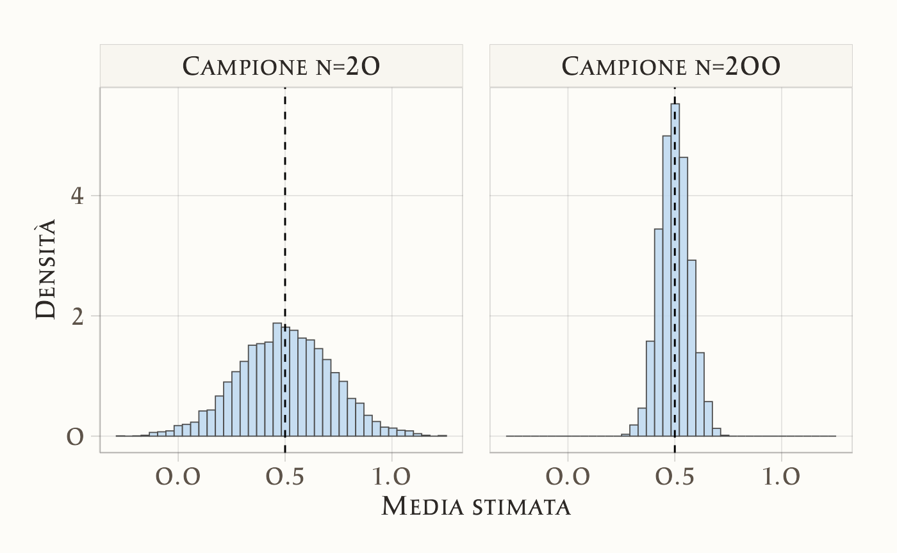

here::here("code", "_common.R") |>
source()
# Load packages
if (!requireNamespace("pacman")) install.packages("pacman")
pacman::p_load(HDInterval)3 Abbracciare l’incertezza
“The only way to cope with uncertainty is to model it probabilistically.”
— Dennis V. Lindley, The Philosophy of Statistics
Introduzione
Nella ricerca psicologica, così come in tutte le scienze empiriche, i dati che raccogliamo non sono mai privi di incertezza. Ogni misura, ogni stima e ogni conclusione che traiamo si accompagnano a un margine di dubbio. Comprendere e gestire questa incertezza non è un dettaglio tecnico, ma una parte essenziale del lavoro scientifico.
Quando chiediamo a un campione di studenti universitari di valutare il proprio livello di ansia su una scala da 1 a 5, non otteniamo una misura perfetta e definitiva del “vero” livello di ansia. Otteniamo invece una stima influenzata da molte fonti di variabilità: la situazione contingente (per esempio, se quel giorno c’era un esame imminente), le caratteristiche individuali, e l’inevitabile errore di misura.
3.0.1 Perché parlare di incertezza?
Il concetto di incertezza ci obbliga a distinguere tra ciò che osserviamo direttamente (i dati raccolti) e ciò che vogliamo inferire (le proprietà psicologiche latenti, come ansia, autostima, motivazione). In altre parole, l’incertezza è il ponte che collega i nostri dati grezzi alle conclusioni scientifiche. Ignorarla porta a una falsa sensazione di sicurezza; affrontarla in modo esplicito ci consente invece di fare affermazioni più oneste e più utili (Lindley, 2013).
Parlare di incertezza non significa arrendersi al relativismo. Significa piuttosto riconoscere che ogni conclusione scientifica deve essere accompagnata da una valutazione della sua affidabilità. La psicologia, che si confronta con fenomeni complessi e variabili, ha un bisogno particolare di metodi che rendano questa valutazione trasparente e rigorosa.
Panoramica del capitolo
- La psicologia si confronta sempre con variabilità e incertezza nei dati.
- Abbiamo distinto tre forme di incertezza: aleatoria, epistemica, ontologica.
- L’approccio bayesiano offre un modo intuitivo per rappresentare e aggiornare le nostre convinzioni.
- Le credenze iniziali orientano la ricerca, i dati le modificano, le decisioni ne sono il risultato.
- La crisi di replicazione mostra l’importanza di trattare l’incertezza in modo esplicito e trasparente.
3.1 Variabilità e incertezza
Quando osserviamo un fenomeno psicologico, raramente troviamo valori identici tra i soggetti o persino nello stesso soggetto in momenti diversi. Questa variabilità è un fatto fondamentale della psicologia sperimentale: due studenti possono riportare livelli molto diversi di ansia prima di un esame, oppure lo stesso studente può mostrare oscillazioni da un giorno all’altro. La variabilità dei dati non è un ostacolo, ma un’informazione preziosa: ci dice che i processi psicologici non sono rigidi, bensì dinamici e influenzati da molteplici fattori.
Tuttavia, per passare dalla semplice descrizione (le misure raccolte) all’inferenza (conclusioni sui processi sottostanti) dobbiamo fare i conti con l’incertezza. L’incertezza non è altro che il riconoscimento formale del fatto che non possiamo mai conoscere con certezza assoluta i parametri psicologici reali (es. il “vero” livello di ansia di un individuo). Inoltre, i dati che raccogliamo sono solo una finestra parziale e rumorosa su questi parametri.
3.1.1 Perché l’incertezza è cruciale in psicologia?
In discipline come la fisica, spesso si assume che i fenomeni abbiano leggi relativamente stabili. In psicologia, invece, i fenomeni sono complessi, soggetti a influenze contestuali, sociali e individuali. L’incertezza non è quindi un “rumore da eliminare”, ma un aspetto strutturale che dobbiamo modellare.
Nella ricerca psicologica, ignorare l’incertezza ha avuto conseguenze gravi: risultati poco replicabili, fiducia eccessiva nei valori “puntuali” delle stime, e difficoltà a distinguere effetti reali da fluttuazioni casuali. La crisi di replicazione in psicologia ci ricorda che non basta riportare un effetto medio; dobbiamo anche comunicare quanto siamo incerti su quell’effetto.
3.2 Fonti di incertezza
L’incertezza rappresenta una componente ineliminabile della ricerca psicologica, la cui origine può essere ricondotta a diverse fonti. Una classificazione articolata di tali fonti non costituisce un mero esercizio teorico, ma offre un quadro concettuale essenziale per comprendere i limiti delle nostre conoscenze, la natura di ciò che rimane imprevedibile e i confini entro i quali operano i modelli scientifici. In particolare, è possibile distinguere tre forme fondamentali di incertezza.
3.2.1 1. Incertezza aleatoria
L’incertezza aleatoria scaturisce dall’intrinseca imprevedibilità di alcuni fenomeni psicologici. Anche disponendo di una conoscenza completa di tutti i fattori rilevanti, non sarebbe possibile determinare con esattezza l’esito di un singolo evento. Si tratta pertanto di un’incertezza irriducibile, che non può essere eliminata né attraverso il miglioramento degli strumenti di misura, né mediante l’acquisizione di ulteriori dati. Un esempio emblematico proviene dagli studi sull’apprendimento associativo: uno stesso soggetto, pur avendo interiorizzato una regola, può occasionalmente fornire una risposta incongrua a causa della natura non perfettamente deterministica dei processi cognitivi e attentivi.
3.2.2 2. Incertezza epistemica
L’incertezza epistemica trae origine, invece, dai limiti della nostra conoscenza empirica. Poiché è impossibile osservare l’intera popolazione di interesse o misurare costrutti psicologici in modo del tutto privo di errore, i ricercatori lavorano necessariamente con dati parziali, campioni limitati e strumenti di indagine imperfetti. A differenza dell’incertezza aleatoria, questa forma di incertezza può essere attenuata attraverso il disegno di studi più accurati, il reperimento di campioni più ampi e rappresentativi, o il raffinamento dei modelli statistici. Ad esempio, la stima del livello medio di ansia negli studenti in prossimità di un esame è inevitabilmente affetta da margine di errore; tale incertezza può tuttavia ridursi significativamente qualora venga considerato un campione più numeroso o meglio strutturato.
3.2.3 3. Incertezza ontologica o modellistica
L’incertezza ontologica, o modellistica, attiene all’adeguatezza del quadro teorico e metodologico adottato. Tutti i modelli scientifici sono, per loro natura, semplificazioni della realtà: nessuno di essi può catturare appieno la complessità del comportamento umano, delle sue determinanti e delle sue manifestazioni. Questa forma di incertezza non dipende dalla quantità dei dati raccolti, bensì dalla bontà della struttura concettuale attraverso cui i dati stessi vengono interpretati. Un esempio rilevante è l’utilizzo di un modello di regressione lineare per analizzare la relazione tra stress e rendimento accademico: sebbene utile, tale approccio trascura inevitabilmente l’influenza di variabili ulteriori—quali le dinamiche temporali, le interazioni sociali o i fattori culturali—che pure contribuiscono a definire il fenomeno indagato.
3.3 La quantificazione dell’incertezza nell’approccio bayesiano
Dopo aver esaminato le diverse nature dell’incertezza, sorge una questione metodologica cruciale: come è possibile rappresentarle in modo sistematico e formalmente rigoroso? L’approccio bayesiano fornisce una cornice concettuale e operativa particolarmente potente ed elegante per questo scopo, una cornice che verrà adottata in modo trasversale in questo volume.
Il principio fondante di questo approccio è intuitivo nella sua essenza, ma profondo nelle sue implicazioni. Esso propone di abbandonare la tradizionale logica della stima puntuale unica—che ad esempio affermerebbe “il livello medio di ansia è 28”—a favore di una rappresentazione più ricca e informativa. Secondo la prospettiva bayesiana, la conoscenza su un parametro viene espressa attraverso un intero spettro di valori possibili, a ciascuno dei quali viene associato un specifico grado di plausibilità o credibilità.
In tal modo, l’inferenza statistica non si limita a indicare qual è il valore più probabile alla luce dei dati osservati, ma comunica esplicitamente anche il livello di incertezza che circonda quella conclusione. Questo passaggio da una stima singola a una distribuzione di probabilità ci consente di quantificare, visualizzare e quindi gestire in modo trasparente tutte le forme di incertezza—aleatoria, epistemica e modellistica—precedentemente discusse, integrandole organicamente all’interno del processo di analisi e interpretazione dei risultati.
3.3.1 Dal punto di vista bayesiano
L’approccio bayesiano alla statistica si fonda su un principio fondamentale: la conoscenza scientifica è intrinsecamente dinamica e si evolve attraverso un processo continuo di aggiornamento. Prima di raccogliere i dati, il ricercatore possiede inevitabilmente un insieme di aspettative iniziali, spesso derivate dalla letteratura preesistente, da teorie consolidate o dall’esperienza clinica. Tali aspettative—definite previsioni a priori—non costituiscono un bias da negare, bensì una posizione di partenza esplicita e formalizzabile. Ad esempio, un ricercatore potrebbe ritenere plausibile che il livello medio di ansia negli studenti si collochi intorno a un certo valore, pur ammettendo un margine di variazione. La raccolta dei dati consente quindi di aggiornare queste credenze iniziali, producendo una distribuzione a posteriori che sintetizza in modo coerente il precedente stato di conoscenza e l’evidenza empirica emergente. Il risultato di questo processo non è una stima puntuale e definitiva, bensì una rappresentazione probabilisticamente articolata e più informata della nostra incertezza.
3.3.2 Perché è utile in psicologia?
La psicologia, in quanto disciplina che studia fenomeni multivariati, contestuali e spesso di difficile osservazione diretta, trae particolare vantaggio dall’adozione di un framework bayesiano. Questo approccio consente ai ricercatori di esprimere in modo trasparente sia le proprie ipotesi sia i propri dubbi, riconoscendo esplicitamente il ruolo della soggettività e dell’incertezza nel processo scientifico. Inoltre, offre un meccanismo formale per integrare—in modo coerente e riproducibile—informazioni provenienti da fonti eterogenee, quali risultati di studi precedenti, modelli teorici o conoscenze cliniche. Infine, la rappresentazione probabilistica dell’incertezza evita l’illusione di una precisione ingiustificata, sostituendo il ricorso a valori unici e apparentemente definitivi con intervalli di credibilità che comunicano in modo più onesto lo stato effettivo della conoscenza.
3.3.3 Un esempio intuitivo: il lancio della moneta
Si consideri l’esempio intuitivo del lancio di una moneta del quale ignoriamo l’effettivo bilanciamento. In assenza di informazioni, potremmo inizialmente ritenere plausibile che la moneta sia equilibrata, attribuendo approssimativamente la stessa probabilità agli esiti “testa” e “croce”. Tuttavia, dopo aver osservato una sequenza di dieci lanci—ad esempio, otto teste e due croci—è ragionevole rivedere questa convinzione iniziale, aggiornando le nostre credenze verso l’ipotesi che la moneta possa favorire l’uscita della testa. È importante notare che ciò che cambia non è la proprietà fisica della moneta, bensì il nostro stato di conoscenza riguardo ad essa. L’approccio bayesiano fornisce gli strumenti formali per quantificare esattamente questo tipo di aggiornamento delle credenze.
3.3.4 Un esempio psicologico parallelo
Un analogo contesto psicologico può chiarire ulteriormente il meccanismo bayesiano. Si supponga di voler stimare il livello medio di ansia provato da studenti in prossimità di un esame, misurato su una scala da 1 a 5. In assenza di dati, il ricercatore potrebbe ritenere plausibile un valore medio intorno a 3, pur ammettendo un ampio margine di incertezza. Tuttavia, dopo aver raccolto le risposte di un primo gruppo di dieci studenti—otto dei quali riportano punteggi elevati (4 o 5)—la nostra rappresentazione dell’ansia media si modifica: non solo il valore più plausibile si sposta verso l’alto, ma anche l’incertezza residua assume una forma diversa, più informata e circoscritta. Anche in questo caso, il risultato non è una certezza assoluta, bensì una rinnovata stima della plausibilità dei diversi valori possibili, condizionata all’evidenza osservata.
3.3.5 Il ruolo delle credenze e delle decisioni nella ricerca psicologica
L’approccio bayesiano riconosce esplicitamente che ogni impresa scientifica—in psicologia come in altre discipline—inizia da un insieme di credenze. Tali credenze, che orientano la formulazione delle domande di ricerca e la progettazione degli studi, non sono viste come distorsioni indesiderate, bensì come componenti legittime e inevitabili del processo conoscitivo. Nel quadro bayesiano, esse vengono rese esplicite sotto forma di distribuzioni a priori e sottoposte a un rigoroso processo di revisione alla luce dei dati empirici.
3.3.5.1 Credenze che si aggiornano
Si consideri l’ipotesi che la pratica della mindfulness possa ridurre i livelli di stress negli studenti universitari. Un ricercatore potrebbe, sulla base di teorie e risultati precedenti, partire da un moderato ottimismo. Se i dati raccolti mostrano una chiara riduzione dello stress nel gruppo sperimentale, la credenza iniziale verrà rafforzata; se, al contrario, l’evidenza empirica risulta debole o contraddittoria, la stessa credenza verrà ridimensionata. L’obiettivo non è dimostrare di aver avuto inizialmente ragione, bensì apprendere dall’evidenza e aggiornare coerentemente il proprio stato di conoscenza.
3.3.5.2 Dalle credenze alle decisioni
La ricerca psicologica ha quasi sempre ricadute pratiche che implicano processi decisionali. Uno psicologo clinico deve decidere se implementare un nuovo protocollo terapeutico, un docente valuta se introdurre cambiamenti nella didattica, un ricercatore stabilisce se approfondire una certa linea di indagine. L’approccio bayesiano supporta queste decisioni non offrendo certezze illusorie, ma fornendo un quadro probabilistico esplicito che permette di soppesare rischi, benefici e gradi di incertezza associati a ciascuna opzione.
3.4 L’incertezza e la crisi di replicazione in psicologia
La crisi di replicazione che ha investito la psicologia negli ultimi decenni ha sollevato interrogativi fondamentali sulla solidità delle evidenze scientifiche nella disciplina. Come emerso da progetti sistematici di replicazione (Collaboration, 2015), molti risultati considerati consolidati si sono rivelati meno robusti del previsto, quando non francamente irreplicabili. Tale crisi ha avuto il merito di portare all’attenzione della comunità scientifica un problema epistemologico centrale: la sistematica sottovalutazione dell’incertezza insita nei processi di ricerca e comunicazione dei risultati.
Frequentemente, i risultati sono stati presentati come conclusioni definitive, sebbene ottenuti da campioni di modeste dimensioni, attraverso strumenti di misura affetti da errore e servendosi di modelli statistici che operano inevitabili semplificazioni della realtà. In altri termini, l’incertezza—pur essendo sempre presente—è stata spesso omessa o nascosta nel processo di comunicazione scientifica, creando un’impressione ingiustificata di stabilità e precisione.
3.4.1 Un esempio concreto
Si consideri uno studio che riporta un aumento statisticamente significativo dell’autostima in seguito a un breve training motivazionale. Il risultato potrebbe essere comunicato come una scoperta solida e pronta per l’applicazione. Tuttavia, un esame più attento dello studio potrebbe rivelare che il campione era composto da soli 20 partecipanti, che la variabilità individuale nelle risposte era elevata e che l’effetto osservato—sebbene statisticamente significativo in quel contesto—era di entità modesta e potenzialmente influenzato da fluttuazioni casuali. Quando un successivo tentativo di replicazione condotto con un campione più ampio e metodologicamente rigoroso non riesce a riprodurre lo stesso effetto, la fragilità della conclusione iniziale emerge in tutta la sua evidenza. Il problema non risiede necessariamente in un “falso” risultato, quanto piuttosto in una sottostima dell’incertezza associata alla stima originaria.
3.4.2 Il ruolo dell’approccio bayesiano
L’approccio bayesiano si propone come una risposta metodologica a questa criticità, non eliminando l’incertezza—cosa peraltro impossibile—ma rendendola invece esplicita, quantificata e comunicabile. Rinunciando all’idea di una stima unica e definitiva, esso fornisce una rappresentazione probabilistica completa dei parametri di interesse, mostrando l’intera gamma di valori plausibili e il loro relativo grado di credibilità alla luce dei dati.
Questa trasparenza operativa costituisce un potente antidoto alle distorsioni emerse durante la crisi di replicazione. In primo luogo, consente di valutare e comunicare in modo più realistico la robustezza—o la fragilità—di un risultato. In secondo luogo, aiuta a distinguere tra effetti replicabili e dotati di consistenza empirica e mere oscillazioni casuali, amplificate da campioni di piccole dimensioni o da disegni sperimentali vulnerabili. Infine, facilità l’integrazione dei risultati tra studi differenti, poiché le stime bayesiane sono intrinsecamente cumulative e in grado di incorporare criticamente l’evidenza pregressa.

Riflessioni conclusive
In questo capitolo è emerso con chiarezza come l’incertezza non costituisca un limite accidentale o un difetto della ricerca psicologica, bensì una sua caratteristica intrinseca e ineliminabile. I fenomeni psicologici, per loro natura complessi, sfumati e contestuali, sfuggono a rappresentazioni deterministiche e richiedono un approccio capace di riconoscere—piuttosto che negare—i margini di indeterminazione che li accompagnano.
Abbiamo proposto una tripartizione concettuale delle fonti di incertezza, distinguendo tra l’incertezza aleatoria, radicata nell’intrinseca variabilità e imprevedibilità dei processi psicologici; l’incertezza epistemica, generata dai limiti operativi della nostra osservazione—quali campioni finiti e strumenti imperfetti—e in linea di principio riducibile attraverso il miglioramento metodologico; e infine l’incertezza ontologica o modellistica, che scaturisce dalla necessaria semplificazione operata da qualsiasi modello teorico, e che ci ricorda come la complessità del reale ecceda sempre la nostra capacità di rappresentazione.
Di fronte a questa articolata natura dell’incertezza, l’approccio bayesiano offre una prospettiva profondamente coerente e feconda. La sua intuizione fondamentale consiste nell’abbandonare la ricerca illusoria di stime definitive, a favore di una rappresentazione probabilistica che contempli un ventaglio di esiti possibili, ciascuno associato a un diverso grado di plausibilità. In questo modo, è possibile aggiornare in modo rigoroso e trasparente le nostre convinzioni iniziali alla luce dei nuovi dati, e fondare su una base più realistica le decisioni—siano esse cliniche, educative o di policy.
Infine, abbiamo collegato queste riflessioni di metodo alla crisi di replicazione che ha attraversato la psicologia, mostrando come una cronica sottovalutazione dell’incertezza abbia contribuito a produrre un corpus di risultati apparentemente solidi, ma in realtà fragili e poco riproducibili. Riconoscere, misurare e comunicare l’incertezza non risolve magicamente tutti i problemi metodologici, ma rappresenta un passo necessario verso una scienza più umile, trasparente e autenticamente cumulativa.
Bibliografia
Collaboration, O. S. (2015). Estimating the reproducibility of psychological science. Science, 349(6251), aac4716.
Lindley, D. V. (2013). Understanding uncertainty. John Wiley & Sons.